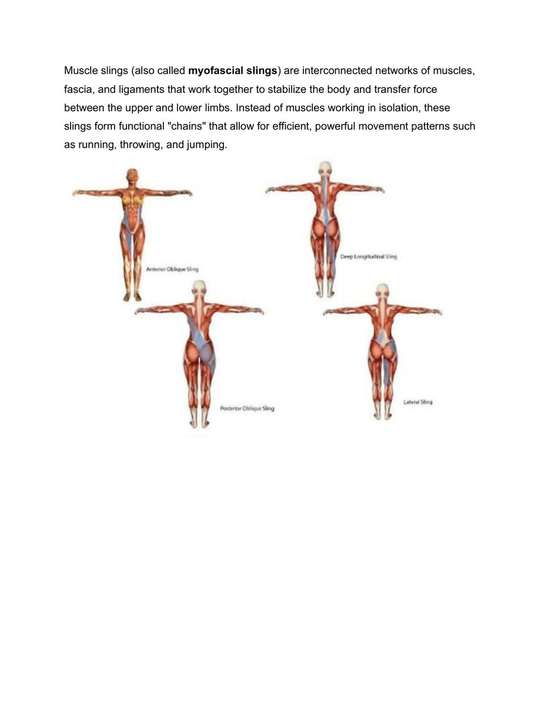

Cơ Sinh Học Màng Cân & Phòng Ngừa Chấn Thương Vai
Dây Chằng Cân Cơ Trong Quần Vợt (Muscle Slings in Tennis)

Muscle Slings in Tennis: Myofascial Kinetic Chains, Rotational Power & Injury Prevention
Bản dịch Việt ngữ
Song ngữ: Việt · Anh
Về bản dịch này. Đây là bản dịch Việt ngữ trọn vẹn cuốn
Dây Chằng Cân Cơ Trong Quần Vợt (Muscle Slings in Tennis). Nhấn nút
EN trên thanh công cụ để đối chiếu bản gốc tiếng Anh.
Tải bản in:
Dây Chằng Cân Cơ Trong Quần Vợt (Muscle Slings in Tennis) (PDF).
Bản dịch Việt ngữ này chỉ dùng cho mục đích học tập cá nhân, phi thương mại. Bản quyền tác phẩm gốc thuộc về tác giả và nhà xuất bản.
Mục Lục Bản Dịch
1. Khái Niệm Dây Chằng Cân Cơ (Myofascial Slings) 1. The Concept of Myofascial Slings
Trong y học thể thao truyền thống, các nhóm cơ thường được phân tích tách biệt theo từng khớp chuyển động (ví dụ: bắp tay co khuỷu, cơ đùi duỗi gối). Tuy nhiên, cơ thể con người trong hoạt động thể thao tốc độ cao không bao giờ vận hành bằng các khối cơ đơn lẻ. Thay vào đó, toàn bộ hệ vận động được kết nối thông qua một mạng lưới màng cân cơ liên tục gọi là hệ thống dây chằng cân cơ (myofascial slings).
In traditional sports medicine, muscle groups are usually analysed in isolation, joint by joint (the elbow flexors, the knee extensors). Yet the human body in high-speed athletic activity never operates through isolated muscle blocks. Instead, the entire movement system is connected through a continuous network of muscle and fascia known as the myofascial sling system.
Các dây chằng cân cơ đóng vai trò như những sợi dây cáp chéo đan xen quanh khung xương, vừa có chức năng neo giữ khung chậu và cột sống ở trạng thái ổn định vững chắc, vừa đóng vai trò như lò xo đàn hồi tích trữ và giải phóng động lượng cực lớn.
The slings act as criss-crossing cables woven around the skeleton, both anchoring the pelvis and spine in a stable position and serving as elastic springs that store and release enormous momentum.
2. Bốn Hệ Thống Dây Chằng Cân Cơ Chính Của Cơ Thể 2. The Four Principal Sling Systems of the Body
Cơ thể con người vận dụng bốn chuỗi dây chằng cân cơ cốt lõi để tạo ra chuyển động và duy trì thăng bằng trên sân quần vợt:
The human body employs four core sling chains to produce movement and maintain balance on the tennis court:
- Chuỗi chéo trước (Anterior Oblique Sling - AOS):
Bao gồm cơ chéo bụng ngoài (external oblique), cơ chéo bụng trong đối bên (contralateral internal oblique), kết nối qua màng cân bụng (abdominal fascia) với nhóm cơ khép háng đối bên (adductors). Đây là Chuỗi động học liên hoàn quan trọng hàng đầu cho chuyển động xoay thân và gập người bùng nổ, đặc biệt là cú thuận tay (forehand) hiện đại.
- Chuỗi chéo sau (Posterior Oblique Sling - POS):
Bao gồm cơ lưng rộng (latissimus dorsi), màng cân ngực thắt lưng (thoracolumbar fascia) và cơ mông lớn đối bên (contralateral gluteus maximus). Chuỗi này tạo ra lực đẩy xoay ngược chiều và duỗi thân, là cỗ máy sinh lực chính cho quả giao bóng (serve) và các cú đập smash.
- Chuỗi cơ bên (Lateral Sling - LS):
Bao gồm cơ mông nhỡ (gluteus medius), cơ căng mạc đùi (TFL), dải chậu chày (IT band) và cơ vuông thắt lưng đối bên (quadratus lumborum). Chuỗi này chịu trách nhiệm khóa thăng bằng cho khung chậu khi đứng trên một chân, tạo điểm tựa ổn định cho các bước chạy đổi hướng cắt góc (lateral agility).
- Chuỗi dọc sâu (Deep Longitudinal Sling - DLS):
Bao gồm cơ dựng sống (erector spinae), dây chằng cùng ụ ngồi (sacrotuberous ligament), cơ nhị đầu đùi (biceps femoris) và cơ chày trước/sau chạy xuống lòng bàn chân. Chuỗi này truyền tải lực phản hồi mặt đất (ground reaction force) từ bàn chân thẳng đứng lên trục cột sống.
Ý Nghĩa Phòng Ngừa Chấn Thương Khớp VaiThe Significance for Shoulder-Injury Prevention
Khi các Hệ thống dây chằng chéo cân mạc (AOS và POS) không được kích hoạt đúng nhịp hoặc bị yếu, vận động viên sẽ theo bản năng dùng cơ bắp cánh tay và khớp vai để cố bù đắp lực đánh. Hiện tượng này dẫn đến tình trạng quá tải cục bộ tại nhóm cơ chóp xoay (rotator cuff) và cơ nhị đầu cánh tay, gây ra hội chứng chèn ép khớp vai và rách sụn viền khớp (SLAP tear). Huấn luyện dây chằng cân cơ chính là phương pháp bảo vệ vai tự nhiên và bền vững nhất.
When the oblique myofascial systems (AOS and POS) are not activated in the correct sequence or are weak, players instinctively use the arm muscles and shoulder joint to compensate for stroke force. This leads to local overload of the rotator cuff and biceps, producing shoulder impingement and SLAP tears. Sling training is the most natural and sustainable method of protecting the shoulder.
1. Cú Thuận Tay Hiện Đại: Hiện Tượng Kéo Căng Dây Chun (The Whiplash Effect) 1. The Modern Forehand: The Whiplash Effect
Cú thuận tay (forehand) hiện đại không phải là hành động đẩy vợt tới trước bằng cơ tam đầu hay cơ ngực. Cơ chế thực sự của nó là một chuyển động xoắn và giải phóng đàn hồi:
The modern forehand is not an act of pushing the racquet forward with the triceps or pectorals. Its true mechanism is a movement of rotation and elastic release:
- Giai đoạn xoay vai chuẩn bị (Unit Turn): Khi bạn xoay thân trên và đưa vợt ra sau, bạn đang thực hiện động tác kéo căng Chuỗi Chéo Trước (Anterior Oblique Sling). Cơ chéo bụng bên thuận kết nối chéo qua rốn với cơ khép háng của chân đối diện bị kéo căng cực đại như một sợi dây cao su.Unit turn preparation phase: as you turn the upper body and take the racquet back, you are stretching the Anterior Oblique Sling. The oblique on the stroke side connects diagonally across the navel to the adductors of the opposite leg, which are stretched to the maximum like a rubber band.
- Chuyển giao năng lượng: Bàn chân sau đạp mạnh xuống mặt đất, đẩy hông xoay về phía trước. Sự trễ nhịp của vai và cánh tay tạo nên một lực kéo giật ngược, truyền toàn bộ năng lượng từ háng và bụng qua vai, bắn đầu vợt vút đi với vận tốc như một chiếc roi quất (the whiplash).Energy transfer: the back foot drives hard into the ground, pushing the hips forward. The lag of the shoulder and arm creates a whip-like pull, transmitting all the energy from hips and abdomen through the shoulder and firing the racquet head away like a cracked whip (the whiplash).
2. Tầm Quan Trọng Sống Còn Của Khoảng Không Gian Ngang (Lateral Space) 2. The Vital Importance of Lateral Space
Một trong những lỗi phổ biến nhất khiến người chơi nghiệp dư đánh bóng thiếu lực là đứng quá gần quỹ đạo bay của quả bóng. Khi khoảng cách ngang bị thu hẹp:
One of the most common errors that makes amateur players hit without power is standing too close to the ball's flight path. When lateral distance is reduced:
- Khuỷu tay thuận bị ép chặt vào mạn sườn, khiến khớp vai bị kẹt cứng (elbow jam).The hitting elbow is jammed against the ribs, locking the shoulder joint (elbow jam).
- Chuỗi Chéo Trước (AOS) bị sụp đổ hoàn toàn biên độ kéo căng, tước đoạt toàn bộ khả năng xoay trục của thân người.The Anterior Oblique Sling (AOS) collapses entirely in its stretch amplitude, stripping the torso of all rotational capability.
- Người chơi buộc phải dùng cổ tay gập vội để cứu bóng, vừa triệt tiêu uy lực vừa gây viêm gân Động tác sấp cổ tay / xoay trong cẳng tay.The player is forced to flick the wrist hurriedly to save the ball, both destroying power and causing flexor-pronator tendinitis of the forearm.
Bí Quyết Điều Hòa Hơi Thở Kích Hoạt Vùng LõiThe Secret of Breathing Rhythm to Activate the Core
Hơi thở là cầu nối kích hoạt Hệ thống dây chằng chéo cân mạc. Khi chuẩn bị xoay vai (unit turn), hãy hít vào nhẹ nhàng bằng mũi để mở rộng lồng ngực và kéo căng màng cân cơ bụng. Vào khoảnh khắc bắt đầu vung vợt tiếp xúc bóng, hãy chủ động thở hắt ra dứt khoát bằng miệng (tiếng thở grunting đặc trưng của các đấu thủ chuyên nghiệp). Hành động thở hắt ra làm co thắt cơ hoành và cơ bụng ngang (transverse abdominis), khóa cứng cột sống thắt lưng và tăng tốc độ co thắt của Chuỗi Chéo Trước thêm 25%.
Breath is the bridge that activates the oblique myofascial system. As you prepare the unit turn, inhale gently through the nose to open the chest and stretch the abdominal fascia. At the moment you begin the swing into contact, exhale decisively through the mouth (the characteristic grunt of professional players). That exhalation contracts the diaphragm and transverse abdominis, locks the lumbar spine rigid, and increases the contraction speed of the Anterior Oblique Sling by a further 25%.
1. Cú Giao Bóng: Chuyển Động Duỗi Thân Toàn Diện 1. The Serve: A Full-Body Extension Movement
Nếu cú thuận tay chủ yếu dựa vào chuyển động xoay và gập của Chuỗi Chéo Trước (AOS), thì cú giao bóng lại là vương quốc của Chuỗi Chéo Sau (Posterior Oblique Sling - POS) và Chuỗi Dọc Sâu (Deep Longitudinal Sling - DLS).
If the forehand relies mainly on the rotation and flexion of the Anterior Oblique Sling (AOS), the serve is the kingdom of the Posterior Oblique Sling (POS) and the Deep Longitudinal Sling (DLS).
Một cú giao bóng có tốc độ trên 190 km/h của các tay vợt chuyên nghiệp không phải do cánh tay phải tạo ra. Hơn 50% tổng động lượng của cú giao bóng bắt nguồn trực tiếp từ đôi chân đẩy bật lên từ mặt sân. Việc lạm dụng cánh tay để giao bóng là nguyên nhân trực tiếp dẫn đến hội chứng thoái hóa chóp xoay (rotator cuff tendinopathy) và rách sụn viền khớp vai.
A professional's 190 km/h serve is not produced by the hitting arm. More than 50% of total serve momentum originates directly from the legs pushing off the court surface. Overusing the arm to serve is the direct cause of rotator cuff tendinopathy and shoulder labral tears.
2. Cơ Chế Bật Bung Của Chuỗi Chéo Sau 2. The Explosive Mechanism of the Posterior Oblique Sling
Quá trình phát lực giao bóng diễn ra theo trình tự sinh cơ học hoàn hảo:
Serve power generation follows a perfect biomechanical sequence:
- Kích hoạt Chuỗi Dọc Sâu (DLS): Bàn chân cắm chặt xuống sân, cơ nhị đầu đùi và dây chằng cùng ụ ngồi truyền toàn bộ lực phản hồi mặt đất (ground reaction force) theo phương thẳng đứng qua khung chậu lên cột sống.Activating the Deep Longitudinal Sling (DLS): the foot plants firmly on the court; the hamstrings and sacrotuberous ligament transmit the entire ground reaction force vertically through the pelvis up the spine.
- Kéo căng Chuỗi Chéo Sau (POS): Khi thân người uốn cong hình cánh cung và đầu vợt hạ sâu sau lưng (racquet drop), cơ mông lớn chân sau và cơ lưng rộng bên tay cầm vợt bị kéo căng tối đa qua màng cân ngực thắt lưng.Stretching the Posterior Oblique Sling (POS): as the body arches and the racquet drops behind the back (racquet drop), the rear-leg gluteus maximus and the hitting-side latissimus dorsi are stretched to the maximum through the thoracolumbar fascia.
- Cú quất roi sấp cẳng tay (Pronation Snap): Khi hông và ngực bung về phía trước, cơ lưng rộng co thắt với tốc độ cực nhanh, kéo cánh tay lên đỉnh Điểm tiếp xúc bóng và tạo ra động tác xoay trong khớp vai cùng sấp cẳng tay (pronation) hoàn toàn tự nhiên mà không cần ép cơ cổ tay.The pronation snap: as hips and chest explode forward, the latissimus dorsi contracts at extreme speed, pulling the arm up to the peak contact point and producing internal shoulder rotation and forearm pronation entirely naturally, without forcing the wrist.
Bảo Vệ Khớp Vai: Ba Quy Tắc VàngProtecting the Shoulder: Three Golden Rules
- Không bao giờ giao bóng bằng cánh tay trần: Luôn ý thức rằng đôi chân và cơ mông mới là động cơ chính cung cấp năng lượng phóng vợt.Never serve with a bare arm: always remember that the legs and glutes are the main engine supplying racquet power.
- Tiếp đất giảm xóc trên một chân: Chân trước tiếp đất nhẹ nhàng bên trong sân với đầu gối khuỵu nhẹ để Chuỗi Dọc Sâu hấp thụ xung chấn dội ngược từ mặt sân cứng.Land with shock absorption on one leg: the front foot lands gently inside the court with a slightly bent knee so the Deep Longitudinal Sling absorbs the rebound shock from the hard surface.
- Đà kết thúc vợt quét dài qua thân: Cho phép cây vợt tự do quét chéo xuống sườn đối diện để cơ lưng rộng và cơ thang sau từ từ phanh hãm đầu vợt, bảo vệ các gân cơ chóp xoay mỏng manh.Let the follow-through sweep long across the body: allow the racquet to sweep freely down across the opposite ribs so the latissimus dorsi and rear deltoid gradually brake the racquet head, protecting the fragile rotator cuff tendons.
1. Ba Bài Tập Chức Năng Đánh Thức Dây Chằng Cân Cơ Cốt Tử 1. Three Functional Exercises to Awaken the Core Slings
Để các chuỗi cơ bắp vận hành tự động theo phản xạ trên sân đấu, người chơi cần kích hoạt các đường liên kết màng cân (fascia pathways) trong phòng tập bằng các bài tập đa khớp chuyên biệt:
For the muscle chains to operate automatically by reflex in match play, players must activate the fascial pathways in the gym through specialised multi-joint exercises:
- Russian Twist Nâng Cao (Kích hoạt Chuỗi Chéo Trước - AOS):
Ngồi trên thảm, nhấc hai bàn chân rời khỏi mặt đất, hai đầu gối gập 90 độ. Cầm một quả bóng tạ hoặc đĩa tạ 3-5 kg trước ngực, xoay thân trên từ trái sang phải một cách có kiểm soát. Bài tập này bắt buộc cơ chéo bụng và cơ khép háng phải liên tục co thắt đồng thời để giữ thăng bằng cho khung chậu, mô phỏng chính xác chuyển động vặn mình của cú thuận tay.
- Single-Leg Romanian Deadlift to Cable Row (Kích hoạt Chuỗi Chéo Sau - POS):
Đứng thăng bằng trên chân trái, gập hông đưa thân người về phía trước trong khi chân phải duỗi thẳng ra sau. Tay phải cầm dây cáp kéo về sườn đồng thời kích hoạt cơ mông chân trái và cơ lưng rộng bên phải. Đây là bài tập vàng giúp tái hiện cơ chế nạp tải và phát lực của quả giao bóng đỉnh cao.
- Lateral Band Walk (Kích hoạt Chuỗi Cơ Bên - LS):
Đeo dây kháng lực quanh cổ chân hoặc trên đầu gối, hạ thấp trọng tâm vào tư thế bán ngồi (quarter squat) và bước ngang từng bước ngắn. Bài tập này củng cố sức mạnh cho cơ mông nhỡ và dải chậu chày, bảo vệ dây chằng khớp gối và tăng tốc độ di chuyển đổi hướng trên sân quần vợt.
2. Chuỗi Khởi Động Thần Tốc 5 Phút "Hip Snap & Muscle Sling" 2. The 5-Minute 'Hip Snap & Muscle Sling' Warm-Up
Trước khi bước vào sân cầm vợt đánh bóng, hãy dành đúng 5 phút để thực hiện quy trình đánh thức thần kinh cơ bắp sau:
Before stepping onto court with a racquet, spend exactly 5 minutes on the following neuromuscular awakening sequence:
- Phút 1: Xoay vòng khớp háng và kéo dãn động khớp vai (Arm Circles & Leg Swings) để tăng tiết dịch bao hoạt dịch khớp.Minute 1: hip circles and dynamic shoulder stretches (Arm Circles & Leg Swings) to increase synovial fluid in the joints.
- Phút 2: 15 lần Side Plank mỗi bên có nâng chân trên để kích hoạt Chuỗi Cơ Bên (LS).Minute 2: 15 side planks per side with a raised leg to activate the Lateral Sling (LS).
- Phút 3: 20 lần Bật nhảy xoay hông tại chỗ (Hip Snap Jumps) giữ thân trên cố định để kích hoạt Chuỗi Chéo Trước (AOS).Minute 3: 20 Hip Snap Jumps on the spot with the upper body fixed to activate the Anterior Oblique Sling (AOS).
- Phút 4: 15 lần Động tác cánh cung giao bóng không vợt (Shadow Serve Arches) kéo căng cơ mông và lưng đối bên để đánh thức Chuỗi Chéo Sau (POS).Minute 4: 15 Shadow Serve Arches without a racquet, stretching the contralateral glute and back to awaken the Posterior Oblique Sling (POS).
- Phút 5: 10 lần Nhảy thăng bằng Split-step kết hợp bước tiến nổ lực để đánh thức Chuỗi Dọc Sâu (DLS).Minute 5: 10 split-step jumps combined with an explosive forward step to awaken the Deep Longitudinal Sling (DLS).
Bảng Tổng Hợp Vận Dụng Dây Chằng Cân Cơ Trong Quần VợtSummary Table: Applying Myofascial Slings in Tennis
| Hệ Thống Chuỗi Cơ |
Các Cơ Bắp Tham Gia Chính |
Ứng Dụng Trong Cú Đánh Tennis |
| Chuỗi chéo trước (AOS) |
Cơ chéo bụng ngoài/trong & Cơ khép háng đối bên |
Tạo lực xoay bùng nổ cho cú Forehand và cú ép bóng thuận tay trên đà chạy |
| Chuỗi chéo sau (POS) |
Cơ lưng rộng, màng cân ngực thắt lưng & Cơ mông lớn đối bên |
Tạo lực duỗi thân và xoay trong quất roi cho quả Giao bóng (Serve) & Smash |
| Chuỗi cơ bên (LS) |
Cơ mông nhỡ, cơ căng mạc đùi & Cơ vuông thắt lưng |
Khóa thăng bằng khung chậu khi chạy cắt ngang và bật nhảy đánh bóng trên một chân |
| Chuỗi dọc sâu (DLS) |
Cơ dựng sống, dây chằng cùng ụ ngồi & Cơ nhị đầu đùi |
Tiếp nhận và truyền dẫn lực phản hồi mặt đất (GRF) từ bàn chân lên toàn thân |
 Hình 1: Bốn hệ thống dây chằng cân cơ chính (The Four Major Sling Systems). Sự phối hợp nhịp nhàng giữa bốn chuỗi này biến cơ thể thành một cỗ máy đòn bẩy đàn hồi liên hoàn.Figure 1: The Four Major Sling Systems. The seamless coordination between these four chains turns the body into an interlocking elastic lever machine.
Hình 1: Bốn hệ thống dây chằng cân cơ chính (The Four Major Sling Systems). Sự phối hợp nhịp nhàng giữa bốn chuỗi này biến cơ thể thành một cỗ máy đòn bẩy đàn hồi liên hoàn.Figure 1: The Four Major Sling Systems. The seamless coordination between these four chains turns the body into an interlocking elastic lever machine.
 Hình 2: Mô hình Chuỗi Mạc & Năng lượng Đàn hồi (Fascial Slings & Elastic Energy). Năng lượng tích trữ tỷ lệ với bình phương độ xoắn vặn thân người: E_stored = 1/2 * k * (dx)^2, giải phóng qua chu trình Co-Giãn-Rút ngắn (Stretch-Shortening Cycle).Figure 2: Fascial Slings & Elastic Energy. Stored energy scales with the square of torso rotation: E_stored = 1/2 * k * (dx)^2, released through the Stretch-Shortening Cycle.
Hình 2: Mô hình Chuỗi Mạc & Năng lượng Đàn hồi (Fascial Slings & Elastic Energy). Năng lượng tích trữ tỷ lệ với bình phương độ xoắn vặn thân người: E_stored = 1/2 * k * (dx)^2, giải phóng qua chu trình Co-Giãn-Rút ngắn (Stretch-Shortening Cycle).Figure 2: Fascial Slings & Elastic Energy. Stored energy scales with the square of torso rotation: E_stored = 1/2 * k * (dx)^2, released through the Stretch-Shortening Cycle.
 Hình 3: Chuỗi Chéo Sau (Posterior Oblique Sling). Sự kết nối chéo giữa cơ mông lớn bên này và cơ lưng rộng bên kia qua màng cân ngực thắt lưng tạo nên bệ phóng xoay thân đầy uy lực.Figure 3: The Posterior Oblique Sling. The diagonal connection between the gluteus maximus on one side and the latissimus dorsi on the other via the thoracolumbar fascia forms a powerful rotational launch platform.
Hình 3: Chuỗi Chéo Sau (Posterior Oblique Sling). Sự kết nối chéo giữa cơ mông lớn bên này và cơ lưng rộng bên kia qua màng cân ngực thắt lưng tạo nên bệ phóng xoay thân đầy uy lực.Figure 3: The Posterior Oblique Sling. The diagonal connection between the gluteus maximus on one side and the latissimus dorsi on the other via the thoracolumbar fascia forms a powerful rotational launch platform.
 Hình 4: Giải phẫu Chuỗi Chéo Sau trong cú trái tay (One-Handed Backhand Anatomy). Pha kéo vợt về sau (a) nạp tải vào cơ mông, cơ trám và cơ dựng sống; pha vung vợt tới trước (b) giải phóng toàn bộ năng lượng qua cơ lưng rộng và vai sau.Figure 4: One-Handed Backhand Anatomy in the Posterior Oblique Sling. The backswing phase (a) loads the glutes, deep rotators and erector spinae; the forward swing (b) releases all that energy through the latissimus dorsi and rear shoulder.
Hình 4: Giải phẫu Chuỗi Chéo Sau trong cú trái tay (One-Handed Backhand Anatomy). Pha kéo vợt về sau (a) nạp tải vào cơ mông, cơ trám và cơ dựng sống; pha vung vợt tới trước (b) giải phóng toàn bộ năng lượng qua cơ lưng rộng và vai sau.Figure 4: One-Handed Backhand Anatomy in the Posterior Oblique Sling. The backswing phase (a) loads the glutes, deep rotators and erector spinae; the forward swing (b) releases all that energy through the latissimus dorsi and rear shoulder.
 Hình 5: Toàn vẹn cấu trúc và trục trung tâm (Structural Integrity & Central Axis). Trục ổn định (Đầu tĩnh, cột sống thẳng) giúp năng lượng truyền thông suốt; nếu trục bị gãy lệch, năng lượng đàn hồi của chuỗi mạc sẽ bị rò rỉ và tiêu tán dưới dạng nhiệt.Figure 5: Structural Integrity & Central Axis. A stable axis (still head, straight spine) lets energy flow through; if the axis breaks or deviates, the elastic energy of the fascial chain leaks away and dissipates as heat.
Hình 5: Toàn vẹn cấu trúc và trục trung tâm (Structural Integrity & Central Axis). Trục ổn định (Đầu tĩnh, cột sống thẳng) giúp năng lượng truyền thông suốt; nếu trục bị gãy lệch, năng lượng đàn hồi của chuỗi mạc sẽ bị rò rỉ và tiêu tán dưới dạng nhiệt.Figure 5: Structural Integrity & Central Axis. A stable axis (still head, straight spine) lets energy flow through; if the axis breaks or deviates, the elastic energy of the fascial chain leaks away and dissipates as heat.